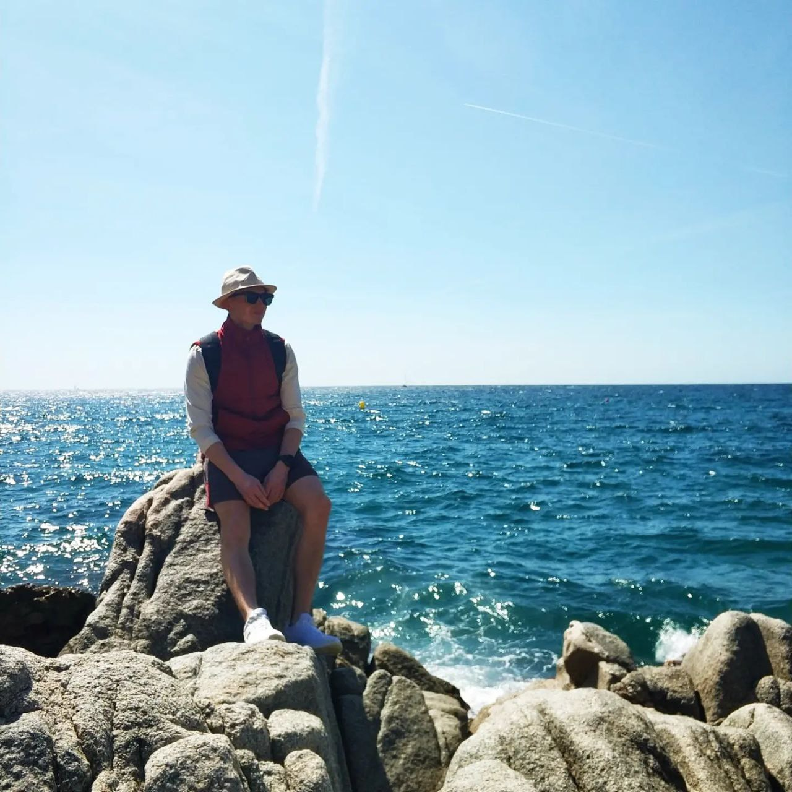

How I started to hike?
First time
First time I experienced hiking, when I was 11, then my parents took me to the survival camp, where I was the youngest participant. I was shoked, because I didn't know what to do and how to survive in the wild nature. We slept in the tents, cooked food on the fire, and did a lot of other interesting things. It was amazing!

Start of the journey
After the first time, I realised, that I like to accept the challenges and to be in the wild nature. So, I started to participate in the survival camp each year and I was prepairing seriously. It was the great atmosphere, which I will never forget.

Years of practicing
I participated in a survival camp for 5 years, I was a leader among other guys, so after 5 years the camp
director invited me to work and share my experience as an Instructor!
So, It turned to be my summer job, which I really enjoyed.

Present
For now, I can say, that I am a professional hiker, I have a lot of experience, and know how to survive in the wild nature. I am still working in a same camp as a Deputy of the director, teaching guys how to not only survive, but also how to make a basic comfort in wild nature
